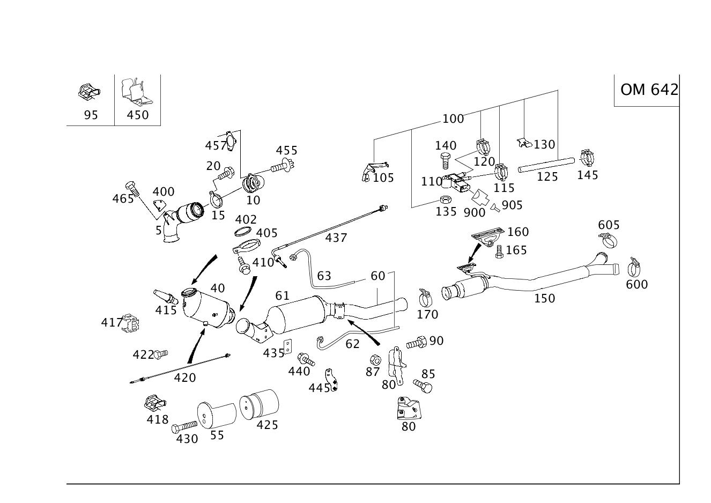

| № | Артикул | Название | Кол. | Примечание | Ограничение |
|---|---|---|---|---|---|
| 5 | A 251 490 76 14 | Катализатор (CATALYTIC CONVERTER) | 1 | M642+-(928/U42) | |
| 5 | A 251 490 65 14 | Катализатор (CATALYTIC CONVERTER) | 1 | M642+828+-(928/U42) | |
| 5 | A 251 490 79 14 | Катализатор пуска (STARTER CAT. CONVERTER) | 1 | M642+494+-(928/U42) | |
| 10 | A 251 491 00 56 | Трубопровод (PIPING) | 1 | К катализатору | ((M642/M642+474+494))+-(928/U42) |
| 15 | A 202 490 08 41 | Трубн. хомут сист.вып. ОГ (PIPE CLAMP, EXHAUST SYS.) | 1 | Катализатор | M642 |
| 20 | N 910143 008006 | Винт с 6-гр. глвк (HEXALOBULAR SCREW) | 1 | К хомуту; M8X45 | M642 |
| 40 | A 164 490 51 14 | Катализатор (CATALYTIC CONVERTER) | 1 | Моторный щит, справа | M642+-(U42/928) |
| 40 | A 164 490 26 36 | Катализатор (CATALYTIC CONVERTER) | 1 | Моторный щит, справа [697] ДЕТАЛЬ ПОСТАВЛЯЕТСЯ ТОЛЬКО/ИЛИ ТАКЖЕ КАК ЗАП.ЧАСТЬ [402] БОЛЬШЕ НЕ ПОСТАВЛЯЕТСЯ | M642+828+-(U42/928) |
| 40 | A 164 490 51 14 | Катализатор (CATALYTIC CONVERTER) | 1 | Моторный щит, справа | M642+474+-(U42/928) |
| 40 | A 164 490 51 14 | Катализатор (CATALYTIC CONVERTER) | 1 | Моторный щит, справа | (M642+(474+494/835))+-(928/U42) |
| 40 | A 164 490 76 36 | Катализатор окисления (OXIDATION CAT. CONV.) | 1 | Моторный щит, справа [697] ДЕТАЛЬ ПОСТАВЛЯЕТСЯ ТОЛЬКО/ИЛИ ТАКЖЕ КАК ЗАП.ЧАСТЬ | (M642+474)+-(928/U42) |
| 55 | A 251 491 00 30 | Экран защитный | 1 | Демпфер | M642 |
| 55 | A 164 491 03 30 | Экран защитный (SCREENING PLATE) | 1 | Демпфер | M642+-U42 |
| 55 | A 251 491 00 30 | Экран защитный | 1 | Демпфер | M642+474 |
| 55 | A 164 491 03 30 | Экран защитный (SCREENING PLATE) | 1 | Демпфер | M642+474+-U42 |
| 55 | A 164 491 03 30 | Экран защитный (SCREENING PLATE) | 1 | Демпфер | M642+-(U42/928) |
| 60 | A 251 490 01 92 | Сажевый фильтр (SOOT PARTICULATE FILTER) | 1 | Перед | M642+474+-(494/U42/928) |
| 60 | A 251 490 02 92 | Сажевый фильтр (SOOT PARTICULATE FILTER) | 1 | Перед | M642+474+-(494/835/U42/928) |
| 60 | A 251 490 03 92 | Сажевый фильтр (SOOT PARTICULATE FILTER) | 1 | Перед | M642+474+-(494/835/U42/928) |
| 60 | A 251 490 13 92 | Сажевый фильтр (SOOT PARTICULATE FILTER) | 1 | Перед [697] ДЕТАЛЬ ПОСТАВЛЯЕТСЯ ТОЛЬКО/ИЛИ ТАКЖЕ КАК ЗАП.ЧАСТЬ | M642+474+-(494/835/U42/928) |
| 60 | A 251 490 03 92 | Сажевый фильтр (SOOT PARTICULATE FILTER) | 1 | Перед | (M642+(474+494/835))+-(U42/928) |
| 61 | A 251 490 55 01 | Предварительный глушитель | 1 | Перед | M642+-(494/U42/928/474) |
| 61 | A 251 490 81 01 | Глушитель (MUFFLER) | 1 | Перед | M642+-(494/U42/928/474) |
| 61 | A 251 490 82 01 | Глушитель (MUFFLER) | 1 | Перед | M642+-(494/U42/928/474) |
| 62 | A 251 490 02 39 | - Напорный трубопровод (PRESSURE LINE) | 1 | Перед сажевым фильтром | (M642+(474+494/835))+-(U42/928) |
| 62 | A 251 490 02 39 | - Напорный трубопровод (PRESSURE LINE) | 1 | Перед сажевым фильтром | M642+474+-(U42/928) |
| 62 | A 251 490 02 39 | - Напорный трубопровод (PRESSURE LINE) | 1 | Перед сажевым фильтром | M642+474+-(U42/928) |
| 63 | A 251 490 03 39 | - Напорный трубопровод (PRESSURE LINE) | 1 | После сажевого фильтра | (M642+(474+494/835))+-(U42/928) |
| 63 | A 251 490 03 39 | - Напорный трубопровод (PRESSURE LINE) | 1 | После сажевого фильтра | M642+474+-(U42/928) |
| 63 | A 251 490 03 39 | - Напорный трубопровод (PRESSURE LINE) | 1 | После сажевого фильтра | M642+474+-(U42/928) |
| 80 | A 251 491 14 41 | Держатель (HOLDER) | 1 | Каталитический нейтрализатор ОГ к коробке передач | M642+-U42 |
| 80 | A 251 491 16 41 | Держатель (HOLDER) | 1 | Каталитический нейтрализатор ОГ к коробке передач | M642+-(U42/928) |
| 85 | N 000000 000276 | Винт с 6-гр. глвк (HEXALOBULAR SCREW) | 2 | Крепление держателя; M8X20 | M642+-(U42/928) |
| 87 | N 000000 003175 | Гайка (NUT) | 2 | Крепление держателя; M8 | M642+-(U42/928) |
| 90 | N 000000 001139 | Винт с 6-гр. глвк (HEXALOBULAR SCREW) | 2 | Крепление держателя; M8X20 | M642 |
| 90 | N 000000 002928 | Винт с 6-гр. глвк (HEXALOBULAR SCREW) | 2 | Держатель к коробке передач; M8X20\-AL10 | -928 |
| 95 | A 001 991 70 70 | Крепежная скоба (FASTENING CLIP) | 1 | Крепление жгута электропроводки | M642+-(U42/928) |
| 100 | A 251 490 08 40 | Держатель (HOLDER) | 1 | Датчик давления | M642+474+-(U42/928) |
| 105 | A 251 491 11 41 | - Держатель (HOLDER) | 1 | Сажевый фильтр | M642+474+-(U42/928) |
| 110 | A 005 153 77 28 | - Датчик давления | 1 | Дифференциальное давление | M642+474+-(U42/928) |
| 110 | A 006 153 49 28 | - Датчик давления | 1 | Дифференциальное давление | M642+474+-(U42/928) |
| 110 | A 007 153 61 28 | - Датчик давления | 1 | Дифференциальное давление | M642+474+-(U42/928) |
| 110 | A 006 153 95 28 | - Датчик давления (PRESSURE SENSOR) | 1 | Дифференциальное давление | M642+474+-(U42/928) |
| 110 | A 642 905 01 00 | - Датчик давления (PRESSURE SENSOR) | 1 | Дифференциальное давление | M642+474+-(U42/928) |
| 115 | A 004 997 25 90 | - хомут (CLAMP) | 1 | К датчику давления; 11.5 MM | M642+474+-(U42/928) |
| 120 | A 006 997 18 90 | - Хомут для шланга (HOSE CLAMP) | 1 | К датчику давления; 13\-14.5 MM | M642+474+-(U42/928) |
| 125 | A 251 493 03 15 | - Шланговый трубопровод (HOSE LINE) | 1 | С РАСШИРЕН. | M642+474+-(U42/928) |
| 125 | A 251 493 02 15 | - Шланговый трубопровод (HOSE LINE) | 1 | БЕЗ РАСШИР. | M642+474+-(U42/928) |
| 130 | A 164 491 02 41 | - Держатель (HOLDER) | 1 | Крепление датчика давления | M642+474+-(U42/928) |
| 135 | N 913023 006001 | - Гайка (NUT) | 1 | Датчик давления к кронштейну; M6 | M642+474+-(U42/928) |
| 140 | N 910143 006004 | Винт с 6-гр. глвк (HEXALOBULAR SCREW) | 1 | Крепление датчика давления; M6X30 | M642 |
| 145 | A 003 997 57 90 | хомут (CLAMP) | 2 | ШЛАНГ НА САЖ. ФИЛЬТРЕ 10mm; 10X6 MM | M642+474+-U42 |
| 145 | A 001 995 20 10 | Хомут для шланга (HOSE CLAMP) | 2 | ШЛАНГ НА САЖ. ФИЛЬТРЕ | M642+474+-(U42/928) |
| 150 | A 251 491 02 37 | ВЫПУСКНАЯ ТРУБА | 1 | Посередине | M642+-(U42/928) |
| 150 | A 251 492 02 04 | Глушитель (MUFFLER) | 1 | Посередине | M642+-(U42/928) |
| 150 | A 251 490 03 19 | Труба выхлопная (EXHAUST GAS LINE) | 1 | Посередине | M642+-(U42/928) |
| 150 | A 251 490 03 19 | Труба выхлопная (EXHAUST GAS LINE) | 1 | Посередине | M642+-(U42/928) |
| 150 | A 251 490 01 20 | Выпускная труба (EXHAUST PIPE) | 1 | Посередине | M642+-(U42/928) |
| 160 | A 251 492 02 44 | - Подвесное кольцо (SUSPENSION RING) | 1 | НА ГЛУШИТЕЛЕ [402] БОЛЬШЕ НЕ ПОСТАВЛЯЕТСЯ | M642+-928 |
| 165 | A 016 990 09 01 | Винт 6-гр. с шайбой (HEXAGONAL HEAD SCREW) | 2 | ПОДВЕСКА НА ГЛАВН. ПОЛУ; M8X18 | M642+-928 |
| 170 | A 000 490 14 41 | хомут (CLAMP) | 1 | СПЕРЕДИ; Ø65MM TUBE | Ø75.2MM BOWL | M642 |
| 205 | A 251 490 02 09 | Модуль впуска ОГ (EXHAUST GAS INLET MODULE) | 1 | M642+474+928 | |
| 206 | Q 0000000001 | - ВАЖНАЯ ИНФОРМАЦИЯ | 1 | ОТДЕЛЬНАЯ ДЕТАЛЬ НЕ ПОСТАВЛЯЕТСЯ, ЗАКАЗАТЬ БЛИЖАЙШИЙ СБОРНЫЙ УЗЕЛ | |
| 210 | A 003 542 88 18 | Датчик NOx | 1 | Передн. 615mm; 615mm | (M642+U42+474)+-(928/30O/13O) |
| 210 | A 006 542 72 18 | Датчик NOx | 1 | Передн. 615mm; 615mm | (M642+U42+474)+-(928/30O/13O) |
| 210 | A 000 905 30 00 | Датчик NOx | 1 | Передн. 615mm; 615mm | (M642+U42+474)+-(928/30O/13O) |
| 210 | A 000 905 70 00 | Датчик NOx | 1 | Передн. 615mm; 615mm | (M642+U42+474)+-(928/30O/13O) |
| 210 | A 000 905 35 03 | Датчик NOx (NOX SENSOR) | 1 | Передн. 615mm; 615mm | (M642+U42+474)+-(928/30O/13O) |
| 210 | A 000 905 36 06 | Датчик NOx (NOX SENSOR) | 1 | Передн. 615mm; 615mm [697] ДЕТАЛЬ ПОСТАВЛЯЕТСЯ ТОЛЬКО/ИЛИ ТАКЖЕ КАК ЗАП.ЧАСТЬ [414] СТАРУЮ ДЕТАЛЬ УСТАНАВЛИВАТЬ БОЛЬШЕ НЕ РАЗРЕШАЕТСЯ | -13O+M642+U42+474+30O |
| 210 | A 000 905 51 06 | Датчик NOx (NOX SENSOR) | 1 | Передн. 615mm [697] ДЕТАЛЬ ПОСТАВЛЯЕТСЯ ТОЛЬКО/ИЛИ ТАКЖЕ КАК ЗАП.ЧАСТЬ [414] СТАРУЮ ДЕТАЛЬ УСТАНАВЛИВАТЬ БОЛЬШЕ НЕ РАЗРЕШАЕТСЯ | -13O+M642+U42+474+30O |
| 210 | A 000 905 15 12 | Датчик NOx (NOX SENSOR) | 1 | Передн. 615mm [414] СТАРУЮ ДЕТАЛЬ УСТАНАВЛИВАТЬ БОЛЬШЕ НЕ РАЗРЕШАЕТСЯ | -13O+M642+U42+474+30O |
| 210 | A 000 905 60 22 | Датчик NOx (NOX SENSOR) | 1 | Передн. 615mm | -13O+M642+U42+474+30O |
| 210 | A 000 905 57 12 | Датчик NOx (NOX SENSOR) | 1 | Передн. 615mm | M642+(460/494)+U42+474+13O |
| 215 | Q 0000000001 | ВАЖНАЯ ИНФОРМАЦИЯ | 1 | БОЛЬШЕ НЕ ПОСТАВЛЯЕТСЯ | |
| 220 | A 003 542 88 18 | Датчик NOx | 1 | Сзади 615mm; 615mm | M642+U42+474+-(30O/13O) |
| 220 | A 006 542 72 18 | Датчик NOx | 1 | Сзади 615mm; 615mm | M642+U42+474+-(30O/13O) |
| 220 | A 000 905 30 00 | Датчик NOx | 1 | Сзади 615mm; 615mm | M642+U42+474+-(30O/13O) |
| 220 | A 000 905 70 00 | Датчик NOx | 1 | Сзади 615mm; 615mm [414] СТАРУЮ ДЕТАЛЬ УСТАНАВЛИВАТЬ БОЛЬШЕ НЕ РАЗРЕШАЕТСЯ | M642+U42+474+-(30O/13O) |
| 220 | A 000 905 35 03 | Датчик NOx (NOX SENSOR) | 1 | Сзади 615mm; 615mm | M642+U42+474+-(30O/13O) |
| 220 | A 000 905 36 06 | Датчик NOx (NOX SENSOR) | 1 | Сзади 615mm; 615mm [697] ДЕТАЛЬ ПОСТАВЛЯЕТСЯ ТОЛЬКО/ИЛИ ТАКЖЕ КАК ЗАП.ЧАСТЬ [414] СТАРУЮ ДЕТАЛЬ УСТАНАВЛИВАТЬ БОЛЬШЕ НЕ РАЗРЕШАЕТСЯ | -13O+M642+U42+474+30O |
| 220 | A 000 905 51 06 | Датчик NOx (NOX SENSOR) | 1 | Сзади 615mm [697] ДЕТАЛЬ ПОСТАВЛЯЕТСЯ ТОЛЬКО/ИЛИ ТАКЖЕ КАК ЗАП.ЧАСТЬ [414] СТАРУЮ ДЕТАЛЬ УСТАНАВЛИВАТЬ БОЛЬШЕ НЕ РАЗРЕШАЕТСЯ | -13O+M642+U42+474+30O |
| 220 | A 000 905 15 12 | Датчик NOx (NOX SENSOR) | 1 | Сзади 615mm [414] СТАРУЮ ДЕТАЛЬ УСТАНАВЛИВАТЬ БОЛЬШЕ НЕ РАЗРЕШАЕТСЯ | -13O+M642+U42+474+30O |
| 220 | A 000 905 60 22 | Датчик NOx (NOX SENSOR) | 1 | Сзади 615mm | -13O+M642+U42+474+30O |
| 220 | A 000 905 57 12 | Датчик NOx (NOX SENSOR) | 1 | Сзади 615mm | M642+(460/494)+U42+474+13O |
| 225 | Q 0000000001 | ВАЖНАЯ ИНФОРМАЦИЯ | 1 | БОЛЬШЕ НЕ ПОСТАВЛЯЕТСЯ | |
| 227 | A 000 995 77 44 | Стяжной хомут (CLAMP) | 1 | 5 MM | M642+U42+474 |
| 230 | Q 0000000001 | ВАЖНАЯ ИНФОРМАЦИЯ | 1 | БОЛЬШЕ НЕ ПОСТАВЛЯЕТСЯ | |
| 235 | Q 0000000001 | ВАЖНАЯ ИНФОРМАЦИЯ | 1 | БОЛЬШЕ НЕ ПОСТАВЛЯЕТСЯ | |
| 237 | Q 0000000001 | ВАЖНАЯ ИНФОРМАЦИЯ | 1 | БОЛЬШЕ НЕ ПОСТАВЛЯЕТСЯ | |
| 240 | Q 0000000001 | ВАЖНАЯ ИНФОРМАЦИЯ | 1 | БОЛЬШЕ НЕ ПОСТАВЛЯЕТСЯ | |
| 245 | A 000 541 01 40 | Держатель (HOLDER) | 1 | КРЕПЛЕНИЕ КОНТАКТ. ЗОНДА O2 И КАБЕЛЬ НА ДЕРЖАТЕЛЕ; 18 X 24 MM | M642+U42+494 |
| 250 | A 000 905 35 04 | Датчик сажевого фильтра (SOOT PARTICULATE SENSOR) | 1 | M642+U42+(460/494)+-13O | |
| 250 | A 000 905 12 08 | Датчик сажевого фильтра (SOOT PARTICULATE SENSOR) | 1 | M642+U42+(460/494)+13O | |
| 255 | Q 0000000001 | ВАЖНАЯ ИНФОРМАЦИЯ | 1 | БОЛЬШЕ НЕ ПОСТАВЛЯЕТСЯ | |
| 260 | Q 0000000001 | ВАЖНАЯ ИНФОРМАЦИЯ | 1 | БОЛЬШЕ НЕ ПОСТАВЛЯЕТСЯ | |
| 265 | Q 0000000001 | ВАЖНАЯ ИНФОРМАЦИЯ | 1 | БОЛЬШЕ НЕ ПОСТАВЛЯЕТСЯ | |
| 270 | Q 0000000001 | ВАЖНАЯ ИНФОРМАЦИЯ | 1 | БОЛЬШЕ НЕ ПОСТАВЛЯЕТСЯ | |
| 275 | N 000000 001139 | Винт с 6-гр. глвк (HEXALOBULAR SCREW) | 2 | Держатель к коробке передач; M8X20 | M642+U42 |
| 275 | A 094 990 28 10 | Винт с 6-гранной головкой (HEXAGON HEAD SCREW) | 1 | Держатель к коробке передач; M6X30 | M642+928 |
| 280 | A 164 491 24 41 | Держатель (HOLDER) | 1 | ДАТЧИК ДАВЛЕНИЯ [402] БОЛЬШЕ НЕ ПОСТАВЛЯЕТСЯ | M642+928 |
| 285 | N 913023 006001 | Гайка (NUT) | 1 | НАПОРНАЯ ТРУБКА К КРОНШТЕЙНУ; M6 | M642+928 |
| 290 | A 000 546 20 75 | хомут (CLAMP) | 2 | ДЕРЖАТЕЛЬ ПРОВОДА; 18.0X18.5 MM | M642+U42 |
| 300 | A 251 490 21 36 | Система катализатора (CATALYTIC CONVERT. SYSTEM) | 1 | [697] ДЕТАЛЬ ПОСТАВЛЯЕТСЯ ТОЛЬКО/ИЛИ ТАКЖЕ КАК ЗАП.ЧАСТЬ | M642+928 |
| 300 | A 251 490 16 56 | Система катализатора (CATALYTIC CONVERT. SYSTEM) | 1 | [697] ДЕТАЛЬ ПОСТАВЛЯЕТСЯ ТОЛЬКО/ИЛИ ТАКЖЕ КАК ЗАП.ЧАСТЬ | M642+928 |
| 302 | Q 0000000001 | - ВАЖНАЯ ИНФОРМАЦИЯ | 1 | ОТДЕЛЬНАЯ ДЕТАЛЬ НЕ ПОСТАВЛЯЕТСЯ, ЗАКАЗАТЬ БЛИЖАЙШИЙ СБОРНЫЙ УЗЕЛ | |
| 304 | A 251 491 04 41 | - Держатель (HOLDER) | 1 | ТРУБОПРОВ.РАЗНОСТИ ДАВЛ. НА САЖЕВ. ФИЛЬТРЕ | M642+(474+(494+U42/928)) |
| 306 | N 913023 005002 | - Гайка (NUT) | 1 | ДАТЧИК ДАВЛЕНИЯ К КРОНШТЕЙНУ; M5 | M642+474+-(U42/928) |
| 308 | Q 0000000001 | - ВАЖНАЯ ИНФОРМАЦИЯ | 1 | ОТДЕЛЬНАЯ ДЕТАЛЬ НЕ ПОСТАВЛЯЕТСЯ, ЗАКАЗАТЬ БЛИЖАЙШИЙ СБОРНЫЙ УЗЕЛ | |
| 310 | A 164 491 02 41 | - Держатель (HOLDER) | 1 | ПРОВОДА ДАТЧИКА ДАВЛ. САЖ. ФИЛЬТРА | M642+(474+(494+U42/928)) |
| 312 | A 164 491 26 41 | - Держатель (HOLDER) | 1 | Напорный трубопровод к сажевому фильтру | M642+(474+(494+U42/928)) |
| 316 | A 251 490 07 39 | - Напорный трубопровод (PRESSURE LINE) | 1 | Сзади [402] БОЛЬШЕ НЕ ПОСТАВЛЯЕТСЯ | M642+(928+474/U42) |
| 316 | A 251 491 02 00 | - Напорный трубопровод (PRESSURE LINE) | 1 | Сзади | M642+474+494+U42 |
| 318 | A 000 995 82 35 | - Зажим для шланга (HOSE CLAMP) | 1 | ДАТЧИК ДАВЛ. НА ВОЗДУХОПРОВ. | M642+(474+(494+U42/928)) |
| 320 | A 251 492 02 59 | - Шланг выпускной системы (EXHAUST GAS HOSE) | 1 | Сзади | M642+(928/U42+474) |
| 320 | A 251 492 01 00 | - Шланг выпускной системы (EXHAUST GAS HOSE) | 1 | Сзади | M642+474+494+U42 |
| 322 | A 001 995 20 10 | - Хомут для шланга (HOSE CLAMP) | 1 | ДАТЧИК ДАВЛ. НА ВОЗДУХОПРОВ. | M642+(474+(494+U42/928)) |
| 324 | A 007 153 61 28 | - Датчик давления | 1 | Дифференциальное давление BOSCH | M642+(474+(494+U42/928)) |
| 324 | A 642 905 01 00 | - Датчик давления (PRESSURE SENSOR) | 1 | Дифференциальное давление | M642+(474+(494+U42/928)) |
| 326 | A 000 995 82 35 | - Зажим для шланга (HOSE CLAMP) | 1 | ДАТЧИК ДАВЛ. НА ВОЗДУХОПРОВ. | M642+(474+(494+U42/928)) |
| 328 | A 251 492 01 59 | - Шланг выпускной системы (EXHAUST GAS HOSE) | 1 | Передн. | M642+(928/U42+474) |
| 330 | A 000 995 82 35 | - Зажим для шланга (HOSE CLAMP) | 1 | ДАТЧИК ДАВЛ. НА ВОЗДУХОПРОВ. | M642+(474+(494+U42/928)) |
| 332 | A 251 490 06 39 | - Напорный трубопровод (PRESSURE LINE) | 1 | Передн. | M642+(928+474/U42) |
| 332 | A 251 491 01 00 | - Напорный трубопровод (PRESSURE LINE) | 1 | Передн. | M642+474+494+U42 |
| 340 | Q 0000000001 | - ВАЖНАЯ ИНФОРМАЦИЯ | 1 | ОТДЕЛЬНАЯ ДЕТАЛЬ НЕ ПОСТАВЛЯЕТСЯ, ЗАКАЗАТЬ БЛИЖАЙШИЙ СБОРНЫЙ УЗЕЛ | |
| 390 | A 251 492 02 01 | Выпускная труба пер. (EXHAUST PIPE, FRONT) | 1 | Посередине | M642+474+928 |
| 400 | A 203 492 71 41 | Держатель (HOLDER) | 1 | ГОЛОВКА БЛОКА ЦИЛИНДРОВ СПРАВА | M642 |
| 400 | A 164 491 19 41 | Держатель (HOLDER) | 1 | ГОЛОВКА БЛОКА ЦИЛИНДРОВ СПРАВА | M642+928 |
| 400 | A 164 491 19 41 | Держатель (HOLDER) | 1 | ГОЛОВКА БЛОКА ЦИЛИНДРОВ СПРАВА | M642 |
| 402 | A 000 492 08 81 | Уплотнительное кольцо (SEALING RING) | 1 | КАТАЛИЗАТОР | M642 |
| 405 | A 202 490 08 41 | Трубн. хомут сист.вып. ОГ (PIPE CLAMP, EXHAUST SYS.) | 1 | КАТАЛИЗАТОР | M642 |
| 410 | N 910143 008006 | Винт с 6-гр. глвк (HEXALOBULAR SCREW) | 1 | НА ХОМУТЕ; M8X45 | M642 |
| 415 | A 003 542 70 18 | Лямбда-зонд (LAMBDA SENSOR) | 1 | Каталитический нейтрализатор ОГ (передний) | M642+-(U42/13O) |
| 415 | A 003 542 69 18 | Лямбда-зонд (LAMBDA SENSOR) | 1 | Каталитический нейтрализатор ОГ (передний) | (M642+U42+474)+-(13O+04O) |
| 415 | A 006 542 17 18 | Лямбда-зонд (LAMBDA SENSOR) | 1 | Каталитический нейтрализатор ОГ (передний) | (M642+U42+474)+-(13O+04O) |
| 417 | A 000 991 01 70 | Пружинная скоба (SPRING CLIP) | 1 | СОЕДИНЕНИЕ ШТЕКЕРНОЕ; 28X24 MM | M642+474+-(U42/M014) |
| 418 | A 012 988 46 78 | Скоба (CLAMP) | 1 | ДАТЧИК ТЕМПЕР. НА МАСЛ.КАРТЕРЕ; 16.4X15 | M642+474 |
| 418 | A 000 546 20 75 | хомут (CLAMP) | 1 | ДАТЧИК ТЕМПЕР. НА МАСЛ.КАРТЕРЕ; 18.0X18.5 MM | M642+(474/M014) |
| 418 | A 000 991 02 71 | Скоба (CLAMP) | 1 | ПРОВОД ДАТЧИКА ТЕМПЕР. НА ЭКРАНИР. ЩИТКЕ; 18X19 MM | M642 |
| 420 | A 005 153 22 28 | Датчик температуры | 1 | ДАТЧИК ТЕМПЕРАТ. КАТАЛИЗАТОРА | M642 |
| 420 | A 005 153 22 28 | Датчик температуры | 1 | ДАТЧИК ТЕМПЕРАТ. КАТАЛИЗАТОРА | M642+474 |
| 420 | A 005 153 22 28 | Датчик температуры | 1 | ДАТЧИК ТЕМПЕРАТ. КАТАЛИЗАТОРА | M642+474+-U42 |
| 420 | A 005 153 11 28 | Датчик температуры | 1 | ДАТЧИК ТЕМПЕРАТ. КАТАЛИЗАТОРА | M642+474+-U42 |
| 420 | A 005 153 11 28 | Датчик температуры | 1 | ДАТЧИК ТЕМПЕРАТ. КАТАЛИЗАТОРА | M642+474 |
| 420 | A 007 153 63 28 | Датчик температуры (TEMPERATURE SENSOR) | 1 | ДАТЧИК ТЕМПЕРАТ. КАТАЛИЗАТОРА | M642+474 |
| 420 | A 007 153 96 28 | Датчик температуры (TEMPERATURE SENSOR) | 1 | ДАТЧИК ТЕМПЕРАТ. КАТАЛИЗАТОРА | M642+474+-928 |
| 420 | A 005 153 41 28 | Датчик температуры | 1 | ДАТЧИК ТЕМПЕРАТ. КАТАЛИЗАТОРА | M642+474+U42 |
| 420 | A 007 153 75 28 | Датчик температуры | 1 | ДАТЧИК ТЕМПЕРАТ. КАТАЛИЗАТОРА | M642+474+(U42/927) |
| 422 | A 000 990 60 17 | Резьбовая пробка (SCREW PLUG) | 1 | РЕЗЬБОВАЯ ПРОБКА; 14X12 | M642+828/M642+-474 |
| 425 | A 251 491 00 47 | Демпфер (DAMPER) | 1 | НА САЖ. ФИЛЬТРЕ/ПЕРВИЧ.ГЛУШИТЕЛЕ [402] БОЛЬШЕ НЕ ПОСТАВЛЯЕТСЯ | M642+-U42 |
| 425 | A 251 491 03 47 | Демпфер (VIBRATION ABSORBER) | 1 | НА САЖ. ФИЛЬТРЕ/ПЕРВИЧ.ГЛУШИТЕЛЕ | M642+474+928 |
| 425 | A 164 491 01 47 | Демпфер (VIBRATION ABSORBER) | 1 | НА САЖ. ФИЛЬТРЕ/ПЕРВИЧ.ГЛУШИТЕЛЕ | M642+474+-U42 |
| 425 | A 164 491 01 47 | Демпфер (VIBRATION ABSORBER) | 1 | ВЫХЛОП. ТРУБА ЗАДН. | M642+928 |
| 425 | A 251 491 04 47 | Демпфер (VIBRATION ABSORBER) | 1 | ПЕРЕД КАТАЛИЗАТОРОМ | (M642/M642+474/M642+474+494)+-(U42/928) |
| 430 | A 001 990 48 00 | Винт с 6-гранной головкой (HEXAGON HEAD SCREW) | 1 | КРЕПЛЕНИЕ ГАСИТЕЛЯ КОЛЕБ.; 8X70 | M642+-U42 |
| 430 | A 001 990 48 00 | Винт с 6-гранной головкой (HEXAGON HEAD SCREW) | 1 | Держатель демпфера; 8X70 | M642+-(U42/928/474) |
| 430 | A 001 990 48 00 | Винт с 6-гранной головкой (HEXAGON HEAD SCREW) | 1 | Держатель демпфера; 8X70 | M642+474+928 |
| 430 | A 001 990 48 00 | Винт с 6-гранной головкой (HEXAGON HEAD SCREW) | 2 | Держатель демпфера; 8X70 | M642+928 |
| 435 | A 164 491 02 18 | Подкладная пластина (SHIM PLATE) | 1 | КРОНШТЕЙН К КП | M642+-(U42/928) |
| 435 | A 164 491 01 18 | Подкладная пластина (SHIM PLATE) | 1 | Держатель к коробке передач | M113/M156/M272/M273/M276+920/M642+(U42/928) |
| 435 | A 164 491 03 18 | Подкладная пластина (SHIM PLATE) | 1 | К САЖЕВОМУ ФИЛЬТРУ | M642+-(U42/928) |
| 437 | A 005 153 79 28 | Датчик температуры | 1 | ДАТЧИК ТЕМПЕР. САЖ.ФИЛЬТРА | M642+474 |
| 437 | A 005 153 45 28 | Датчик температуры | 1 | ДАТЧИК ТЕМПЕР. САЖ.ФИЛЬТРА | M642+474 |
| 437 | A 007 153 79 28 | Датчик температуры | 1 | ДАТЧИК ТЕМПЕР. САЖ.ФИЛЬТРА | M642+474 |
| 437 | A 007 153 98 28 | Датчик температуры | 1 | ДАТЧИК ТЕМПЕР. САЖ.ФИЛЬТРА | M642+474+-928 |
| 437 | A 005 153 42 28 | Датчик температуры | 1 | ДАТЧИК ТЕМПЕР. САЖ.ФИЛЬТРА | M642+474+U42 |
| 437 | A 007 153 76 28 | Датчик температуры (TEMPERATURE SENSOR) | 1 | ДАТЧИК ТЕМПЕР. САЖ.ФИЛЬТРА | M642+474+U42 |
| 437 | A 008 153 35 28 | Датчик температуры (TEMPERATURE SENSOR) | 1 | ДАТЧИК ТЕМПЕР. САЖ.ФИЛЬТРА [414] СТАРУЮ ДЕТАЛЬ УСТАНАВЛИВАТЬ БОЛЬШЕ НЕ РАЗРЕШАЕТСЯ | M642+474+(U42/927/928) |
| 440 | N 000000 000276 | Винт с 6-гр. глвк (HEXALOBULAR SCREW) | 1 | Держатель к катализатору; M8X20 | M642+-(928/U42) |
| 440 | N 304017 008021 | Винт с 6-гранной головкой (HEXAGON HEAD BOLT) | 2 | Держатель к катализатору; M8X20 | M642+928 |
| 442 | N 000000 003250 | Шайба (WASHER) | 2 | Держатель к катализатору | M642+928 |
| 445 | A 251 491 20 41 | Держатель (HOLDER) | 1 | КАТАЛИЗАТОР НА КП, СПРАВА | M642+928 |
| 445 | A 164 490 00 40 | Держатель (HOLDER) | 1 | НА КП СПРАВА | M642 |
| 450 | A 002 991 27 70 | Скоба (CLAMP) | 1 | КРЕПЛЕНИЕ ЖГУТА ЭЛЕКТРОПРОВОДКИ | M642+(U42/U42+474)/M642+M014 |
| 455 | A 000 990 67 03 | Винт Torx External (HEXALOBULAR HEAD SCREW) | 3 | КОЛЛЕКТОР НА ТУРБОНАГНЕТ.; M8X20 | M642 |
| 457 | A 219 492 00 80 | Прокладка фланца (FLANGE SEAL) | 1 | МЕЖДУ КАТАЛИЗАТОРОМ И ТУРБОНАГНЕТ. | M642 |
| 465 | N 000000 000276 | Винт с 6-гр. глвк (HEXALOBULAR SCREW) | 1 | КРОНШТЕЙН К КАТАЛИЗАТОРУ; M8X20 | M642 |
| 600 | A 000 490 12 41 | хомут (CLAMP) | 1 | Сзади слева; Ø55MM TUBE | Ø65MM BOWL | (M113/M272/M642/M276)+-(920/M002) |
| 605 | A 000 490 12 41 | хомут (CLAMP) | 1 | Сзади справа; Ø55MM TUBE | Ø65MM BOWL | M113/M272/M642/M276+-M002 |
| 610 | A 001 990 48 00 | Винт с 6-гранной головкой (HEXAGON HEAD SCREW) | 1 | КРЕПЛЕНИЕ ГАСИТЕЛЯ КОЛЕБ.; 8X70 | M642+(474/494/928) |
| 610 | A 001 990 48 00 | Винт с 6-гранной головкой (HEXAGON HEAD SCREW) | 1 | КРЕПЛЕНИЕ ГАСИТЕЛЯ КОЛЕБ.; 8X70 | M642+(474/494/928) |
| 610 | A 001 990 48 00 | Винт с 6-гранной головкой (HEXAGON HEAD SCREW) | 1 | КРЕПЛЕНИЕ ГАСИТЕЛЯ КОЛЕБ.; 8X70 | (M642/M642+474/M642+474+494) |
| 610 | A 001 990 48 00 | Винт с 6-гранной головкой (HEXAGON HEAD SCREW) | 1 | КРЕПЛЕНИЕ ГАСИТЕЛЯ КОЛЕБ.; 8X70 | M642/M642+474 |
| 610 | A 001 990 48 00 | Винт с 6-гранной головкой (HEXAGON HEAD SCREW) | 1 | КРЕПЛЕНИЕ ГАСИТЕЛЯ КОЛЕБ.; 8X70 | M642+413+474/M642+474 |
| 610 | A 001 990 48 00 | Винт с 6-гранной головкой (HEXAGON HEAD SCREW) | 1 | КРЕПЛЕНИЕ ГАСИТЕЛЯ КОЛЕБ.; 8X70 | M642+413+474 |
| 615 | A 164 491 01 47 | Демпфер (VIBRATION ABSORBER) | 1 | ГЛУШИТЕЛЬ СЛЕВА | M642/M642+474 |
| 615 | A 164 491 02 47 | Демпфер (VIBRATION ABSORBER) | 1 | ГЛУШИТЕЛЬ СЛЕВА | M642+474+413 |
| 615 | A 164 491 01 47 | Демпфер (VIBRATION ABSORBER) | 1 | ГЛУШИТЕЛЬ СЛЕВА | (M642/M642+474/M642+474+494) |
| 615 | A 164 491 01 47 | Демпфер (VIBRATION ABSORBER) | 1 | ГЛУШИТЕЛЬ СПРАВА | (M642/M642+474/M642+474+494)+-928 |
| 615 | A 164 491 01 47 | Демпфер (VIBRATION ABSORBER) | 1 | ГЛУШИТЕЛЬ СПРАВА | (M642/M642+474)+-928 |
| 615 | A 164 491 02 47 | Демпфер (VIBRATION ABSORBER) | 1 | ГЛУШИТЕЛЬ СПРАВА | M642+413+474+-928 |
| 620 | N 000000 000276 | Винт с 6-гр. глвк (HEXALOBULAR SCREW) | 2 | Крепление распорки; M8X20 | |
| 625 | A 251 490 67 01 | Глушитель (MUFFLER) | 1 | Слева | M642 |
| 625 | A 251 490 85 01 | Система выпуска ОГ | 1 | Слева | M642 |
| 625 | A 251 490 07 15 | Глушитель (MUFFLER) | 1 | Слева | M642/M642+(P96/900)/M642+(P96/900)+494 |
| 625 | A 251 490 17 15 | Глушитель (MUFFLER SYSTEM) | 1 | Слева | M642+(808/809/800) |
| 625 | A 251 490 15 15 | Глушитель (MUFFLER) | 1 | Слева | M642+(808/809/800) |
| 625 | A 251 490 50 15 | Система выпуска ОГ (MUFFLER SYSTEM) | 1 | Слева | (M642/M642+474)+(801/802/803/804)/M642+474+928+(801/802/803/804) |
| 625 | A 251 490 87 01 | Система выпуска ОГ | 1 | Слева | (M272/M642+806)+413/M272+ME03 |
| 625 | A 251 490 97 01 | Глушитель (MUFFLER) | 1 | Слева | (M272/M642+806)+413/M272+ME03 |
| 625 | A 251 490 97 01 | Глушитель (MUFFLER) | 1 | Слева | M642+413+807/M642+(P96/900)+413/M642+(P96/952/900)+413+494 |
| 625 | A 251 490 15 15 | Глушитель (MUFFLER) | 1 | Слева | M642+413+(808/809/800) |
| 625 | A 251 490 07 15 | Глушитель (MUFFLER) | 1 | Слева | M642+474/M642+474+(P96/900) |
| 625 | A 251 490 97 01 | Глушитель (MUFFLER) | 1 | Слева | M642+474+(808/809/800)/M642+474+(P96/900) |
| 625 | A 251 490 97 01 | Глушитель (MUFFLER) | 1 | Слева | M642+474+(808/809/800) |
| 625 | A 251 490 07 15 | Глушитель (MUFFLER) | 1 | Слева | M642+474+494+(P96/900) |
| 625 | A 251 490 97 01 | Глушитель (MUFFLER) | 1 | Слева | M642+474+494+(P96/900) |
| 625 | A 251 490 17 15 | Глушитель (MUFFLER SYSTEM) | 1 | Слева | M642+474+494 |
| 625 | A 251 490 15 15 | Глушитель (MUFFLER) | 1 | Слева | M642+474+494 |
| 625 | A 251 490 15 15 | Глушитель (MUFFLER) | 1 | Слева | M642+413+474+494 |
| 625 | A 251 490 97 01 | Глушитель (MUFFLER) | 1 | Слева | M642+413+474/M642+413+474+(P96/900) |
| 625 | A 251 490 97 01 | Глушитель (MUFFLER) | 1 | Слева | M642+413+474+494+(P96/900) |
| 625 | A 251 490 17 15 | Глушитель (MUFFLER SYSTEM) | 1 | Слева | M642+494 |
| 625 | A 251 490 15 15 | Глушитель (MUFFLER) | 1 | Слева | M642+413+494 |
| 627 | N 910143 008020 | Винт с 6-гр. глвк (HEXALOBULAR SCREW) | 2 | Подвеска слева; M8X12 | |
| 630 | A 251 492 00 44 | - Подвесное кольцо (SUSPENSION RING) | 1 | Подвеска слева | |
| 635 | A 251 490 01 40 | Держатель (HOLDER) | 1 | Подвеска слева | -(M276+M002) |
| 637 | A 251 492 00 44 | - Подвесное кольцо (SUSPENSION RING) | 1 | Подвеска слева | |
| 640 | A 251 490 68 01 | Глушитель (MUFFLER) | 1 | Справа | 806+(M272/M642) |
| 640 | A 251 490 08 15 | Глушитель (MUFFLER) | 1 | Справа | 806+(M272/M642) |
| 640 | A 251 490 08 15 | Глушитель (MUFFLER) | 1 | Справа | 807+(M642/M642+494+(900/952)) |
| 640 | A 251 490 08 15 | Глушитель (MUFFLER) | 1 | Справа | 807+(M642/M642+(P96/900)/M642+(P96/900)+494) |
| 640 | A 251 490 14 15 | Глушитель (MUFFLER SYSTEM) | 1 | Справа | 807+M642+494 |
| 640 | A 251 490 16 15 | Глушитель (MUFFLER) | 1 | Справа | 807+M642+413+494 |
| 640 | A 251 490 08 15 | Глушитель (MUFFLER) | 1 | Справа | M642+474/M642+474+(P96/900) |
| 640 | A 251 490 14 15 | Глушитель (MUFFLER SYSTEM) | 1 | Справа | M642+(808/809/800) |
| 640 | A 251 490 16 15 | Глушитель (MUFFLER) | 1 | Справа | M642+(808/809/800) |
| 640 | A 251 490 98 01 | Глушитель (MUFFLER) | 1 | Справа | M642+474+(808/809/800)/M642+474+(P96/900) |
| 640 | A 251 490 98 01 | Глушитель (MUFFLER) | 1 | Справа | M642+474+(808/809/800) |
| 640 | A 251 490 98 01 | Глушитель (MUFFLER) | 1 | Справа | M642+413+474+494+(P96/900) |
| 640 | A 251 490 51 15 | Система выпуска ОГ (MUFFLER SYSTEM) | 1 | Справа | (M642/M642+474)/M642+474+928 |
| 640 | A 251 490 16 15 | Глушитель (MUFFLER) | 1 | Справа | M642+474+494 |
| 640 | A 251 490 08 15 | Глушитель (MUFFLER) | 1 | Справа | M642+474+494+(P96/900) |
| 640 | A 251 490 98 01 | Глушитель (MUFFLER) | 1 | Справа | M642+474+494+(P96/900) |
| 640 | A 251 490 70 01 | Система выпуска ОГ | 1 | Справа | (M272/M642+806)+413/M272+ME03 |
| 640 | A 251 490 88 01 | Глушитель (MUFFLER) | 1 | Справа | (M272/M642+806)+413/M272+ME03 |
| 640 | A 251 490 98 01 | Глушитель (MUFFLER) | 1 | Справа | (M272/M642+806)+413/M272+ME03 |
| 640 | A 251 490 98 01 | Глушитель (MUFFLER) | 1 | Справа | M642+413+807/M642+(P96/900)+413/M642+(P96/952/900)+413+494 |
| 640 | A 251 490 14 15 | Глушитель (MUFFLER SYSTEM) | 1 | Справа | (808/809/800)+M642+474+494 |
| 640 | A 251 490 16 15 | Глушитель (MUFFLER) | 1 | Справа | (808/809/800)+M642+413 |
| 640 | A 251 490 16 15 | Глушитель (MUFFLER) | 1 | Справа | (808/809/800)+M642+413+474+494 |
| 640 | A 251 490 98 01 | Глушитель (MUFFLER) | 1 | Справа | (808/809/800)+(M642+413+474/M642+413+474+(P96/900)) |
| 642 | N 910143 008020 | Винт с 6-гр. глвк (HEXALOBULAR SCREW) | 2 | Подвеска справа; M8X12 | |
| 645 | A 251 492 00 44 | - Подвесное кольцо (SUSPENSION RING) | 1 | Подвеска справа | |
| 647 | A 251 490 01 40 | Держатель (HOLDER) | 1 | Подвеска справа | |
| 650 | A 251 492 00 44 | - Подвесное кольцо (SUSPENSION RING) | 1 | Подвеска справа | |
| 655 | A 016 990 09 01 | Винт 6-гр. с шайбой (HEXAGONAL HEAD SCREW) | 2 | Основной глушитель слева; M8X18 | |
| 660 | A 221 490 17 27 | Насадка выпускной трубы (TAILPIPE TRIM) | 1 | Слева | |
| 660 | A 221 490 35 27 | Насадка выпускной трубы (TAILPIPE TRIM) | 1 | Слева | |
| 660 | A 221 490 35 27 | Насадка выпускной трубы (TAILPIPE TRIM) | 1 | Слева | |
| 660 | A 221 490 17 27 | Насадка выпускной трубы (TAILPIPE TRIM) | 1 | Слева | |
| 660 | A 251 490 01 27 | Выпускная труба глушителя | 1 | Слева | (806/807)+(M113/M272/M273/M642) |
| 660 | A 251 490 13 27 | Выпускная труба (EXHAUST TAILPIPE) | 1 | Слева | (806/807)+(M113/M272/M273/M642) |
| 660 | A 251 490 13 27 | Выпускная труба (EXHAUST TAILPIPE) | 1 | Слева | (808/809/800)+(M272/M642+474) |
| 670 | A 221 490 36 27 | Насадка выпускной трубы (TAILPIPE TRIM) | 1 | Справа | |
| 670 | A 221 490 18 27 | Насадка выпускной трубы (TAILPIPE TRIM) | 1 | Справа | |
| 670 | A 251 490 02 27 | Выпускная труба глушителя | 1 | Справа | (806/807)+(M113/M272/M273/M642) |
| 670 | A 251 490 14 27 | Выпускная труба (EXHAUST TAILPIPE) | 1 | Справа | (806/807)+(M113/M272/M273/M642) |
| 670 | A 251 490 14 27 | Выпускная труба (EXHAUST TAILPIPE) | 1 | Справа | (808/809/800)+(M272/M642+474) |
| 680 | A 251 491 00 95 | Распорка (STRUT) | 1 | Глушитель выпускной системы | |
| 900 | A 203 545 38 28 | Штекер (PLUG) | 1 | ДАТЧИК ДИФФЕРЕНЦИАЛЬНОГО ДАВЛЕНИЯ B28/8; 3\-PIN SLK2.8 | M642 |
| 905 | A 000 540 38 05 | Электрический провод (ELECTRIC LINE) | NB | ДАТЧИК ДИФФЕРЕНЦИАЛЬНОГО ДАВЛЕНИЯ B28/8; 0.75 MM2 SLK2.8 | M642 |
Позиций: 261 · подписано на схемах: 261 · колесо — плавный зум в курсор, перетаскивание — пан, двойной клик — зум, клик по артикулу — скопировать · наведите на строку или цифру на схеме — подсветка связки, клик — закрепить.